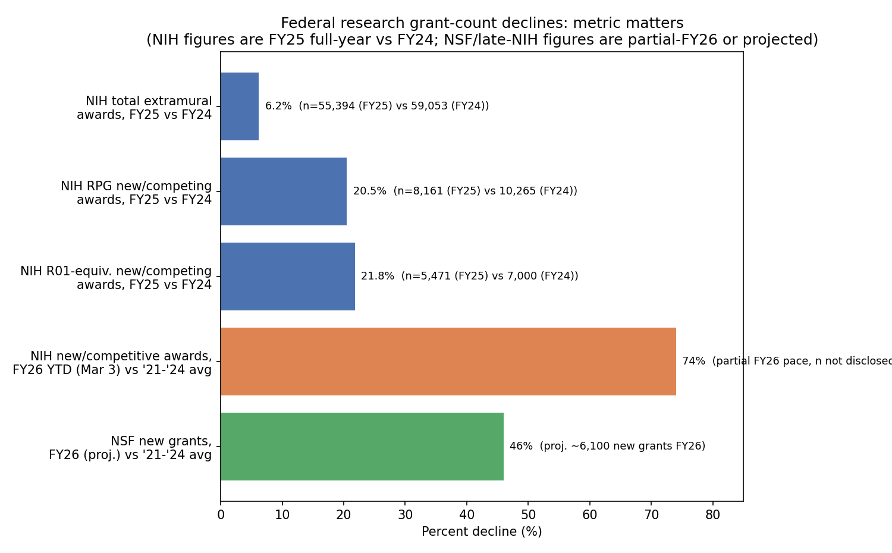

Checked 2026-09-26 · four sub-claims about Johns Hopkins layoffs, NIH grant counts, NSF grant counts, and AAU-member funding declines
Confirmed. Johns Hopkins University laid off 110 employees (reported June 26, 2026), affecting the Bloomberg School of Public Health, the Carey Business School, and central administration. This followed a February 2026 letter from JHU President Ron Daniels stating the university's multiyear federal research portfolio declined by more than $500 million in calendar year 2025, driven by 43% less federal research funding and 28% fewer awards than the prior year.
| Metric | Value |
|---|---|
| Employees laid off | n = 110 |
| Portfolio decline, CY2025 | > $500,000,000 |
| Federal research funding decline | -43% YoY |
| Award count decline | -28% YoY |
Directionally correct but the exact "~25%" figure does not match any single NIH-published year-over-year metric. NIH's own FY2025 By the Numbers post reports several different declines depending on which grant category is measured:
| Metric (FY2025 vs FY2024) | FY2024 | FY2025 | Change |
|---|---|---|---|
| All extramural awards | 59,053* | 55,394 | -6.2% |
| RPG new/competing awards | 10,265 | 8,161 | -20.5% |
| R01-equivalent new/competing awards | 7,000 | 5,471 | -21.8% |
*FY2024 total awards figure implied by the reported -6.2% change on 55,394.
A separately-reported, non-NIH-branded "~25% lower than the 2021-24 comparable-date average" figure describes a mid-year pace comparison (new awards + ongoing payments, vs. a 4-year average), which is a different measurement than a straight FY2025-vs-FY2024 count. It should not be read as confirming or matching the RPG (-20.5%) or R01-equivalent (-21.8%) year-over-year figures above, even though all are in the same ballpark.
The "behind pace for 2026" portion is well supported and, if anything, understates the gap: as of March 3, 2026, NIH had issued 74% fewer new/competitive awards, worth 62% less in dollars, than the 2021-2024 average for the same partial-year period.
Confirmed by convergent reporting. NSF is projected to issue roughly 6,100 new grants in FY2026, 46% below the FY2021-2024 average — the lowest new-grant count in more than four decades (i.e., since around the early 1980s). The decline is uneven by field: astronomical sciences grants down about 50%, materials research down more than 40%, both versus the 2021-2024 average. Reporting attributes part of the shortfall to roughly $1 billion of NSF's $8.8 billion FY2026 budget being held in a central account inaccessible to core grant programs.
| Metric | Value |
|---|---|
| FY2026 projected new grants | n ≈ 6,100 |
| Decline vs. FY2021-2024 average | -46% |
| Astronomical sciences decline | ≈ -50% |
| Materials research decline | > -40% |
Consistent with available reporting, but we could not load the AAU source page directly (HTTP 403 on repeated attempts) and are relying on search-engine-generated summaries of it rather than the original text. Reported figures: some AAU member institutions saw federal research funding drop 10-25% versus 2024, with one institution at 32%. Related figures surfaced in the same reporting context: University of Kansas cited a $182 million year-over-year drop three quarters into FY2026, and AAU-framed (not NIH/NSF-official) figures describing NIH awards down 29% and NSF awards down 50% in 2025 — figures that differ somewhat from the NIH/NSF primary-source figures above, another illustration of "which metric."
Different NIH grant-count metrics moved by very different percentages over the same period. The chart below places them side by side, along with the NSF figure, to show why a bare "~25%" or "~46%" headline needs its metric specified.

Claims 1 and 3 are well-supported by convergent, largely primary/near-primary sourcing. Claim 4 is plausible and consistently reported but rests on search-engine summaries of an AAU page we could not load directly. Claim 2 is directionally correct — and its "behind pace for 2026" portion is solid, arguably an understatement — but the specific "~25%" figure does not exactly match any single official NIH year-over-year metric. NIH's own FY2025-vs-FY2024 metrics range from -6.2% (all awards) to -20.5% (RPG new/competing) to -21.8% (R01-equivalent new/competing); the "~25%" figure more likely reflects a distinct mid-year pace-vs-4-year-average comparison than a same-year, same-metric count. This is the exact reporting hazard flagged for this task: NIH publishes multiple "grant count" metrics that move by different percentages over the same period, and a headline number needs its metric named before it can be cross-checked.